Doplňky k postelím: šuplíky, přistýlky, zábrany
Úložné šuplíky na kolečkách, výsuvné přistýlky, zábrany, senior madla a noční stolky.
Noční stolky
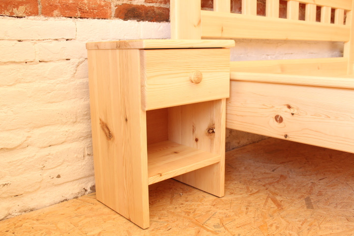
Noční stolek Taro
Materiál: smrk nebo borovice, tl. materiálu 26mm, rozměry: š.35xhl.30xv.50cm.
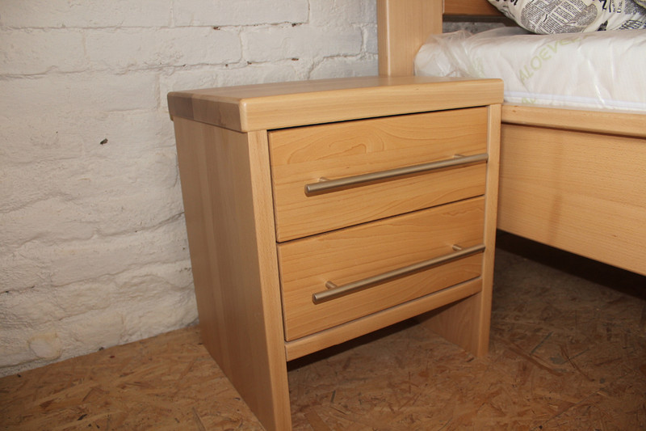
Noční stolek Dona buk
Materiál buk bílý, tl. vrchní plné desky 40mm, boky 27mm,celkové rozměry: š.45xhl.30xv.50cm.
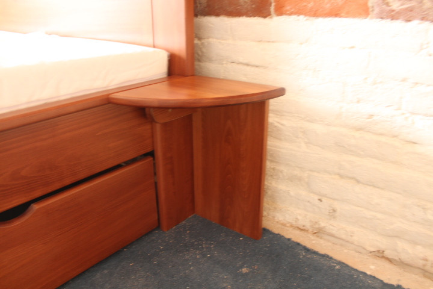
Noční stolek Ida
Materiál smrk nebo borovice ( na fotu v moření Cherry), tl. materiálu 26mm, rozměry: š.35xhl.35xv.50-55cm.
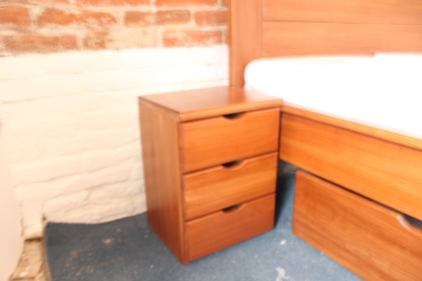
Noční stolek Mony výřez
Materiál smrk nebo borovice ( na fotu v moření Cherry), tl. materiálu 26mm, rozměry: š.40xhl.35xv.55cm.
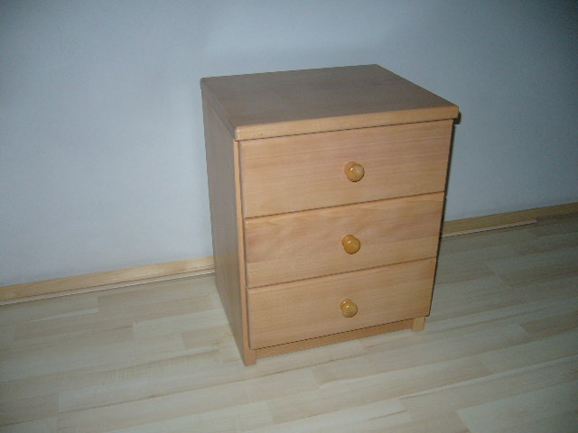
Noční stolek Mony
Materiál smrk nebo borovice ( na fotu buk), tl. materiálu 26mm, rozměry: š.40xhl.32xv.55-60cm.
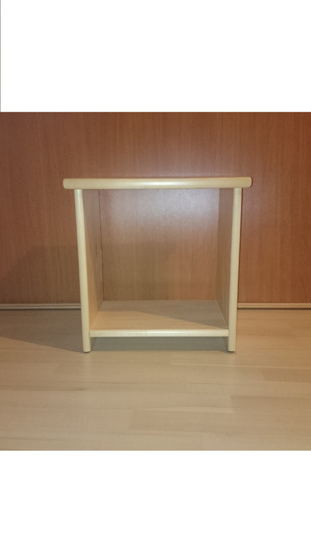
Noční stolek Zora
Materiál: smrk nebo borovice, tloušťka materiálu 26 mm rozměry: š.35 x hl.29 x v. 45cm.
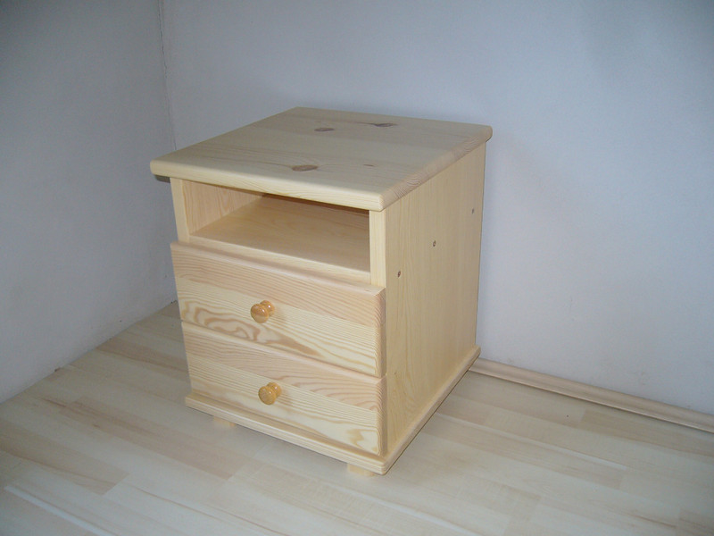
Noční stolek Dyna
Materiál: smrk nebo borovice, tl. materiálu 26mm, rozměry: š.40x hl.32xv.55cm.
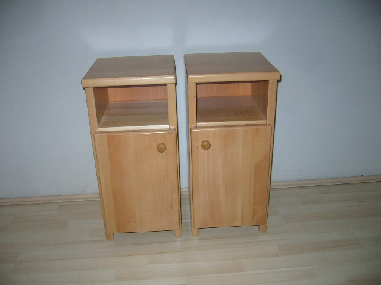
Noční stolek Lia
Materiál: smrk nebo borovice, tl. materiálu 26mm.
Zobrazit dalších 3 modelySkrýt dalších 3
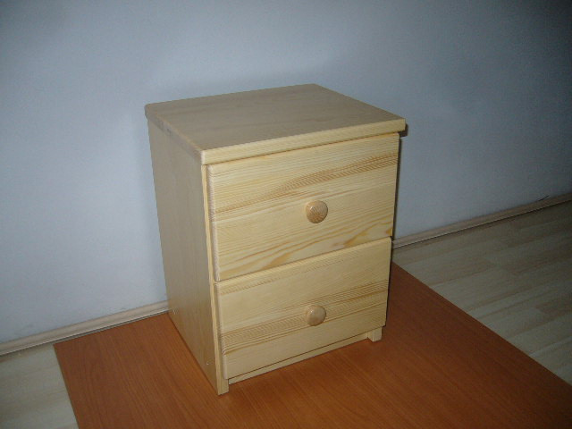
Noční stolek Dalla
Materiál: smrk nebo borovice, tl. materiálu 26mm, rozměry: š.40x hl.32xv.50-55cm ( výška dle potřeby do 55cm).
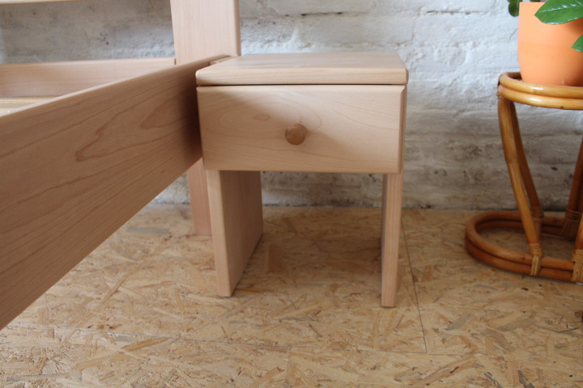
Noční stolek Tedo
Materiál: smrk nebo borovice.
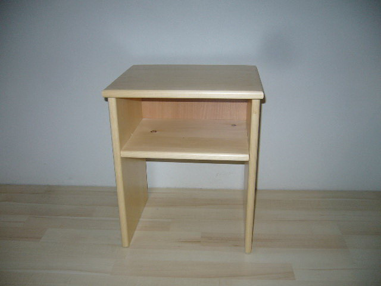
Noční stolek Zoe
Materiál: smrk nebo borovice, tloušťka materiálu 28 mm rozměry: š.35 x hl.30 x v. 45cm.
Úložné prostory a přistýlky
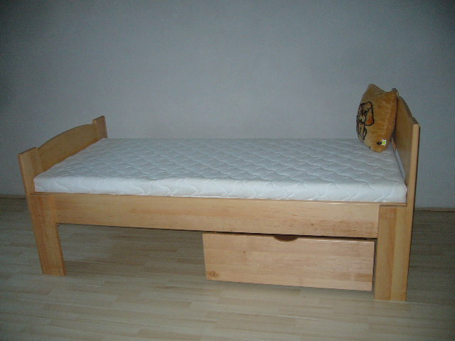
Úložný prostor poloviční
Celomasivní zásuvka na kolečkách, není pevně spojena s postelí.
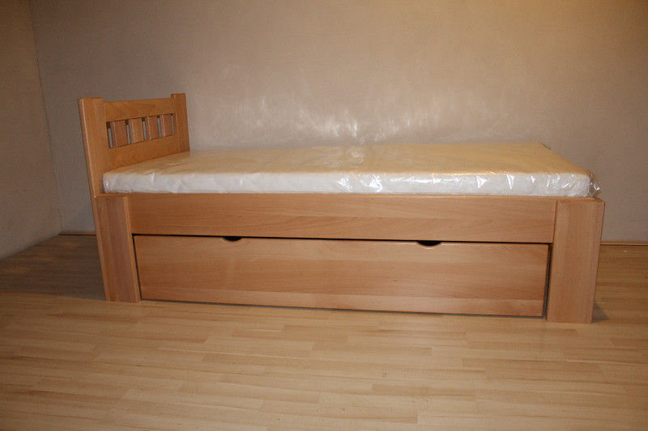
Úložný prostor velký
Celomasivní zásuvka na kolečkách, není pevně spojena s postelí.
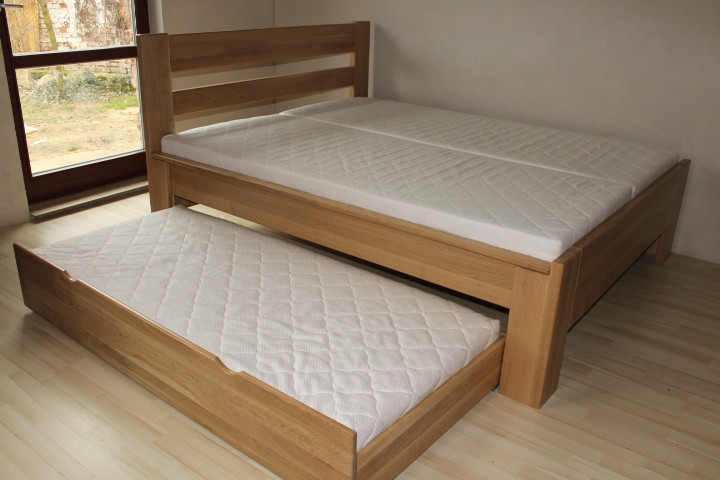
Výsuvná přistýlka pod postel
Výsuv pod postel s nohama do L rozměry venkovní: d. 176 x hl. 95 x v. čela 28 cm, rozměry na matraci: 170x90cm.
Zábrany a madla
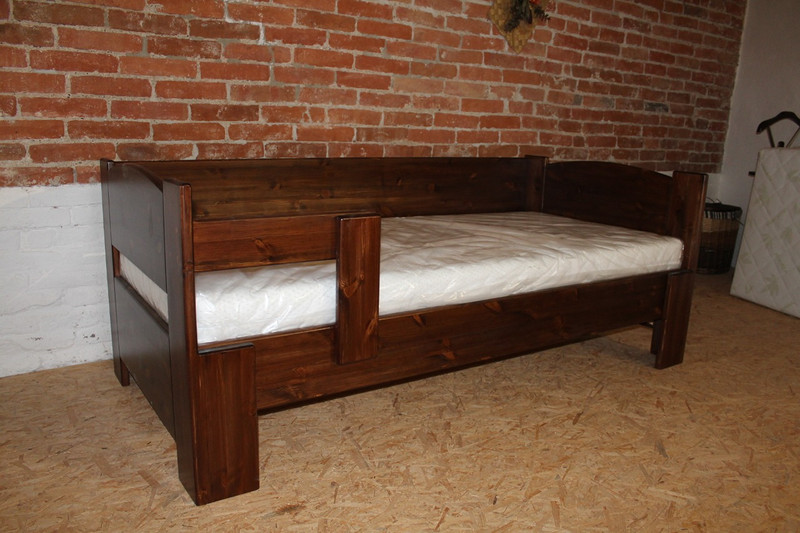
Senior podpěra / boční madlo
Senior podpěra je možné přiobjednat ke každé posteli, je pevně zčepována do čela a do bočnice postele.
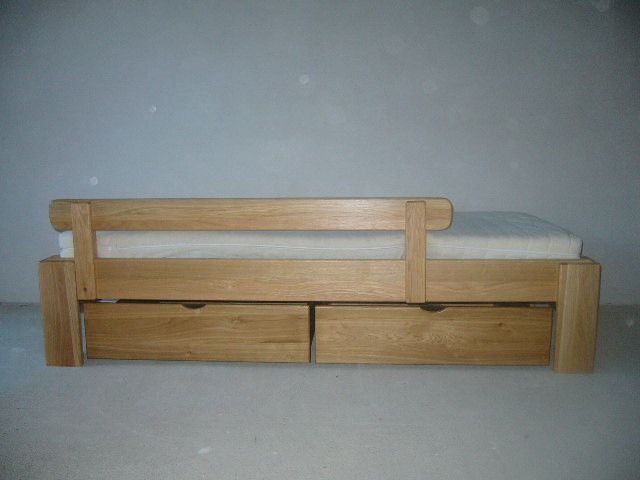
Dětská nasazovací zábrana - materiál smrk, borovice
Zábrana v délce 150cm nasazovací na přední stranu postele za bočnici, pevně uchycena vruty ze strany matrace.
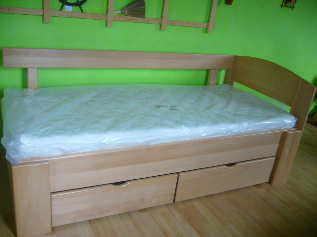
Nasazovací zábrana - materiál smrk,borovice
Zábrana v celé délce 200cm nasazovací na zadní nebo přední stranu postele za bočnici.
Časté dotazy
Kolik stojí senior madlo?
Podpěrná zábrana nebo boční madlo stojí 750 Kč a je pevně zčepované.
Kolik stojí úložné šuplíky na kolečkách?
Poloviční 2 650 Kč, velký 4 180 Kč.
Kolik stojí výsuvná přistýlka?
Ze smrku 5 110 Kč, z buku 5 720 Kč, z jasanu 6 160 Kč a z dubu 7 550 Kč.
Máte dětské zábrany?
Ano. Nasazovací dětská zábrana stojí 500–800 Kč, celodélková 750–950 Kč.
Chcete jiný rozměr nebo provedení?
Napište nebo zavolejte. Vyrobíme podle vašich rozměrů, nákresu nebo fotky.